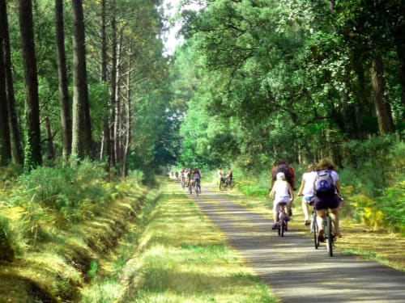
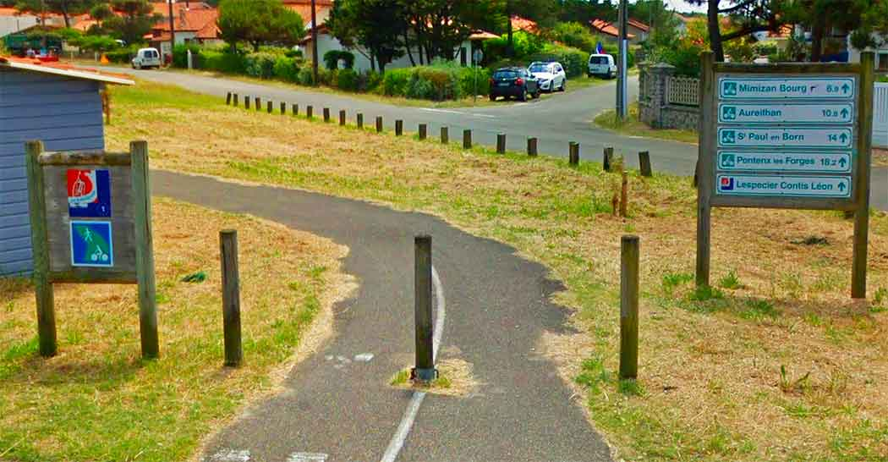
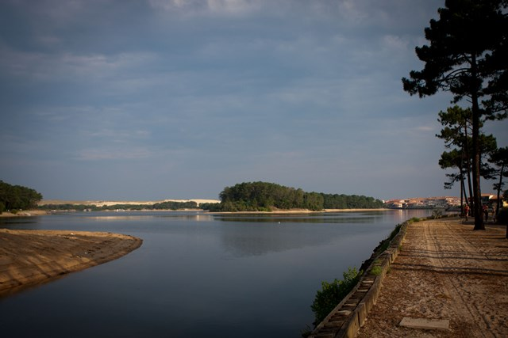

La Vélodyssée es nombre que recibe la ruta principal de las Landas, forma parte de una gran ruta francesa que va desde Roscoff, en la Bretaña, hasta Hendaia.
Empieza desde el Bassin de Arcachon, serpenteando entre bosques y lagos. Esta dividido en 8 étapas y tiene, aproximadamente unos 140 kms
LA VÉLODYSSÉE
La Vélodyssée es nombre que recibe la ruta principal de las Landas, forma parte de una gran ruta francesa que va desde Roscoff, en la Bretaña, hasta Hendaia.
Empieza desde el Bassin de Arcachon, serpenteando entre bosques y lagos. Esta dividido en 8 étapas y tiene, aproximadamente unos 140 kms
VER MÁS

Esta ruta une Mimizan Plage, con Mimizan Bourg (centro Mimizan) y Bias. Esta ruta enlaza con la Vélodyssée y con la ruta Mimizan con Pontenx-les-Forges. Es una pista
de reciente construcción y, por lo tanto, poco transitada. Esta ruta une con los pueblos situados al sur, principalmente con St.Julien-en-Born, pasando por Contis-Plage.
MIMIZAN-PLAGE - BIAS
Esta ruta une Mimizan Plage, con Mimizan Bourg (centro Mimizan) y Bias. Esta ruta enlaza con la Vélodyssée y con la ruta Mimizan con Pontenx-les-Forges. Es una pista
de reciente construcción y, por lo tanto, poco transitada. Esta ruta une con los pueblos situados al sur, principalmente con St.Julien-en-Born, pasando por Contis-Plage.
VER MÁS

Esta bonita ruta de unos 4 kms, consiste en dar la vuelta al lago Marin de Pont D'Albret. Esta pista asfaltada discurre alrededor del lago y no necesita más indicaciones.